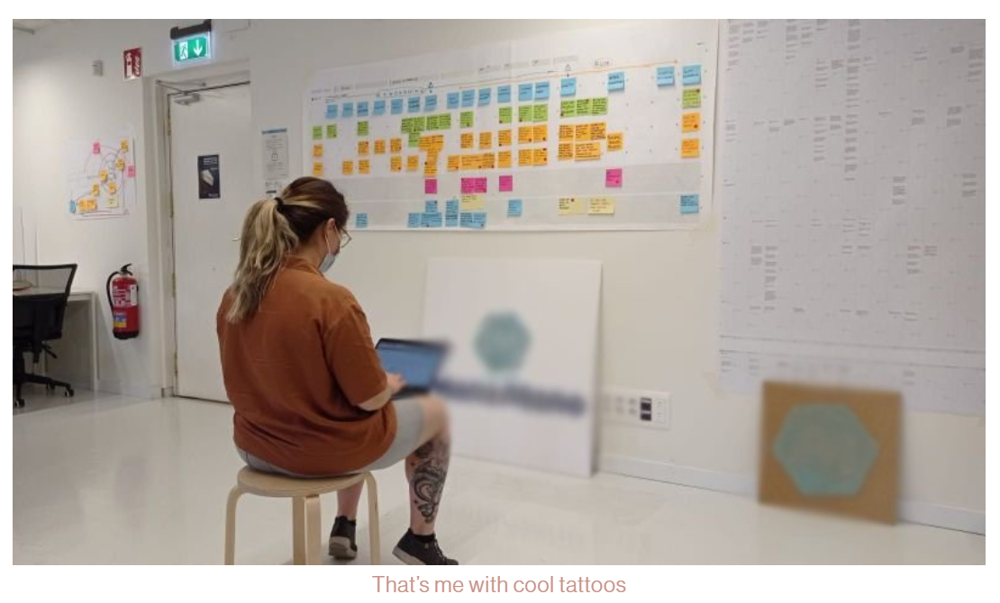

May 28 · Written By Nat.
The Engagement Problem
The problem
A commercial Operation is a process where the business encourage sellers to participate in specific campaigns. They can be seasonal, like Christmas,
Black Friday… Or by category, Swimming pools during summer, for example.
Having said that, our sellers were not participating as much as we hoped, heavily affecting our BV.
The plan
Our goal is to learn how the sellers and our account managers are living the experience of the Commercial Operations
in order to identify all the pain points and opportunities.
The proposal from our stakeholders was: “Let’s do a tool to help them onboard!”
And that might help, but the research team thought that a deeper exploration was needed in order to truly discover
why they were not participating, and hopefully discover some solutions during the process.
The method
Qualitative interviews
- Identify who are the sellers who participate to Commercial Operations and understand what are
their motivations and trigger to participate.
- Identify who are the sellers who do not participate to Commercial Operations and understand why.
Workshop
- Understand and map today’s process in our company to organize, setup and onboard sellers into CO Workshops
to define the user journey from internal workers.
- Understand and map sellers experience when they participate to CO Workshops to define the user journey from sellers.

Benchmark
- Learn what is the CO sellers experience in other Marketplaces and identify opportunities of improvement for ManoMano.
The Learnings
We found that lots of sellers don’t see value on joining the CO because of the following reasons:
- They don’t have enough data to measure the profitability of CO.
- They need to spend a lot of time on manual modifications on the catalog.
- They don’t have enough profitability, considering the low margin, and the time invested.
- Too much time invested for low profit.
- Too generic CO andlower impact with more competition between sellers
- Annoying manual process
We gathered a big list of opportunities that they are now being implemented, such as
- Sooner communications about the CO, to let them be able to prepare with more time.
- Improvements on how they could upload their catalogue and offers. Prioritization on the queues for those sellers who participated in CO.
- Lower commission rate during commercial operations.
- Improve the user-friendliness of the data offered about the CO.
- ...